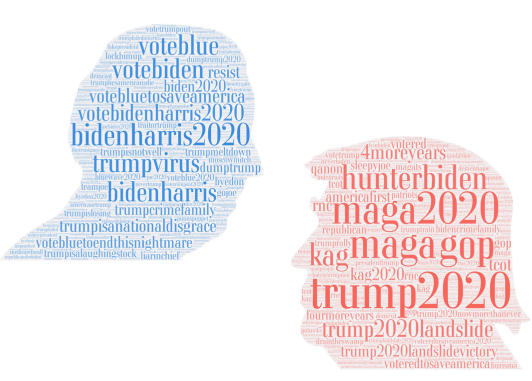
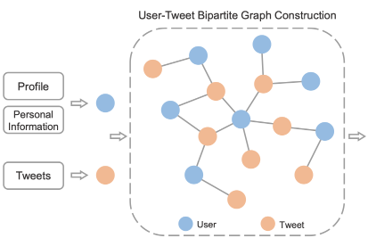
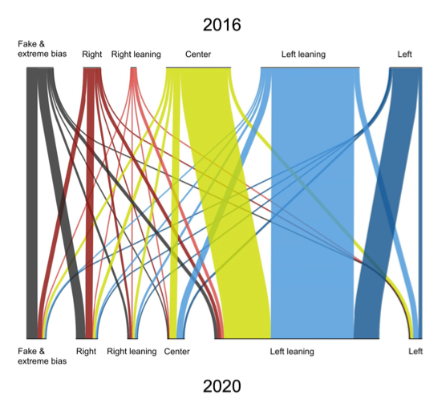

Zhenkun Zhou
周振坤，首都经济贸易大学统计学院数据科学系讲师，硕士研究生导师。
2020年于北京航空航天大学计算机学院获博士学位。
研究方向包括计算社会科学、社交网络、自然语言处理、消费大数据。
欢迎对我研究方向感兴趣的同学们报考研究生，
要求具备：
1）科研热情和创新思维❤️🔥
2）较强编程能力💻，
确定录取后欢迎邮箱联系我。
Zhenkun Zhou is an assistant professor in Capital University of Economics and Business.
He received his Ph.D. degree of computer science from Beihang University in 2020 under supervision of Prof. Ke Xu.
From 2018 to 2019, he visited the City University of New York in USA under supervision of Prof. Hernan A. Makse.
His research focuses on computational social science, social networks, natural language processing.
代表作 Selected Publications

Online Social Behavior Enhanced Detection of Political Stances in Tweets
The International AAAI Conference on Web and Social Media (ICWSM) , 2024
Suspended accounts align with the Internet Research Agency misinformation campaign to influence the 2016 US election
EPJ Data Science, 2024

DoubleH: Twitter User Stance Detection via Bipartite Graph Neural Networks
The International AAAI Conference on Web and Social Media (ICWSM) ,
2024

Political polarization of news media and influencers on Twitter in the 2016 and 2020 US presidential elections
Nature Human Behaviour,
2023
Predicting Intrinsic and Extrinsic Goal Contents Pursuit on Social Media
CYBERPSYCHOLOGY, BEHAVIOR, AND SOCIAL NETWORKING,
2022
人才培养 Teaching
计算社会科学研究组 Research Group
研究生：
何宇馨，岳绪同，戴晓雯，张静，陈洁
本科生：
李冠群，陈相龙，周怡朱南，张雨骁
讲授课程 Lessons
本科：
统计编程基础（Statistical Programming）
大数据预处理（Big Data Preprocessing）
研究生：
非结构化大数据分析（Unstructured Data Analyzing）
数据可视化（Data Visualization）
比赛获奖 Competition
首届全国高校青年教师数据科学与商业分析案例教学竞赛一等奖、优秀案例题材奖，《基于语言模型的零售商品分类》
第十三届市调大赛研究生组全国一等奖，优秀指导教师奖，《果茶相融，“酒”是不同——基于北京市的正大果茶酒消费市场研究》
第六届全国应用统计专业学位研究生案例大赛二等奖（指导教师），《基于KD-ERNIE语言模型的零售消费品多层分类算法研究》
CAAI第八届全国大数据与社会计算学术会议——社会计算创新大赛优秀奖，《社交网络文本抑郁指数构建与计算——以Twitter平台为例》
第九届全国大学生统计建模大赛北京赛区本科组——三等奖（指导老师），《北部沿海经济地区县域经济发展测度研究》
社会服务 Services
讲座与报告 Talk
《浅谈数据科学在企业中的应用及价值》，2023年11月23日，浙江绍兴，有色金属工业统计会议
《基于在线社交⽹络的立场挖掘与选举预测研究》，2022年9月7日，河南郑州，强智杯开源数据智能分析分论坛
《基于在线社交⽹络的选举预测研究》，2021年7月18日，辽宁锦州，中国商业统计学会市场调查与教学研究分会第32届年会“东方艾学”海归论坛
专利与软著 Patent
商品品类自动标注软件（2023SR1489972）, 2023年11月
基于大语言模型的零售商品分类与标签识别软件（2024SR0409008）, 2024年01月
Journal Reviewer
IEEE Transactions on Neural Networks and Learning Systems;
IEEE Transactions on Computational Social Systems;
IEEE Transactions on Big Data;
Cyberpsychology, Behavior, and Social Networking;
Royal Society Open Science;
Big Data & Society;
International Journal of Public Opinion Research;
Journal of Computational Social Science